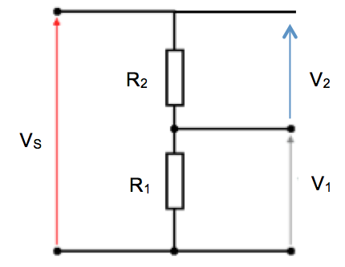
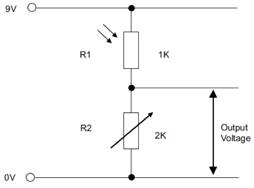
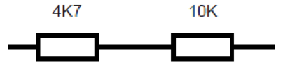
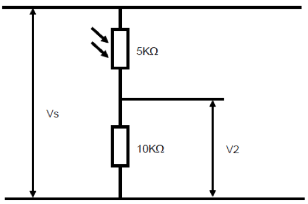

Mathematics for Electronics
Table of Contents
1 Introduction
- To be successful at electronics, you only need a small number of equations.
Ohm's Law
- V = IR
- V is Voltage, measured in Volts,
- I is current, measured in Amperes (Amps for short),
- R is resistance, measured in Ohms (Ω).
Example According to its datasheet, an LED can take a maximum of 3V, and has a safe current of up to 20mA. If powered by a 6v battery, what size resistor will be needed to protect it?
Let’s aim for 2.5V and 20mA, to ensure we don’t have any problems. If we have 6V in the circuit, we need the resistor to remove 3.5V (6 - 2.5) from the circuit, leaving 2.5V for the LED. We can then say that…
V=3.5
I=0.02
Re-arranging the formula gives R = V / I
Therefore R = 3.5 / 0.02 = 175Ω
As an aside, it turns out that 175Ω isn’t a standard resistor size we can buyfrom a shop, so we go to the next largest size, which is 180Ω (220Ω would also work well).
Electrical Power
P = VI
- Power (Watts) = Voltage x Current
Example Is a 0.25W resistor adequate for the example above?
The amount of power the resistor has to dissipate can be calculated as…
P = 3.5 x 0.02 = 0.07W
- Since the resistor can dissipate up to 0.25W, this resistor could safely handle the current from up to three LEDs.
Resistors in Series
To calculate the overall resistance achieved when connecting together resistors in series, we add them together. E.g.
RT = R1 + R2
Example Two resistors are connected together in series in a circuit. The colour codes on the first resistor is green, blue, black, gold. The colour code on the second resistor has been rubbed off. When a multi-meter is placed across both resistors, the meter reads 276Ω. What is the resistance of the unmarked resistor?
276 = 56 + R2
R2 = 276 - 56 = 220Ω
Potential Divider
- The potential divider setup allows electronic engineers to create different voltage levels in a circuit. This can be useful when connecting analogue components to a PIC.
 V1 = (R1 / (R1 + R2)) x Supply voltage (VS)
V2 = (R2 / (R1 + R2)) x Supply Voltage (VS)
Example A 9V battery supplies a potential divider. Two 1kΩ resistors are used. What is the voltage at V1?
V1 = (1000 / (1000+1000)) x 9
V1 = (1000 / 2000) x 9
V1 = (0.5) x 9 = 4.5V
2 Understanding Check
Sample Questions
- A 9v DC motor motor rated at 0.673A is to be powered by a 12V supply. What size resistor should be used to make it run at it’s maximum speed?
- A 60W lightbulb in a house is running on a standard 230V AC power supply. How much current does it draw?
- UK fuses can be 1A, 3A, 5A or 13A. This refers to how much current can be drawn through the fuse without it “blowing”. What size fuse should be fitted to a 1600W hairdryer?
- A circuit being designed has a 12V supply, but needs a 3V rail, to be made with a potential divider. Suggest two resistor values that could provide this, and confirm it in circuit wizard.
- What’s the overall resistance achieved by connecting together 3x 100Ω resistors in series in a circuit?
Past Paper Questions
June 2010, Q3c. The following circuit diagram shows a simple potential divider light sensor circuit.  (i) Name the component labelled R1. (1 mark) (ii) Name the component labelled R2. (1 mark) (iii) Calculate the output voltage when R1 is 1K, R2 is 2K and the supply voltage is 9V.
Formula:
Working:
Answer with units:
(4 marks)
June 2012, Q6b. Calculate the value of the total resistance of the following resistors in series.  Formula:
Calculation:
Answer:
(4 marks)
June 2012, Q6d. The circuit below is a light sensor. The resistance of the LDR is 5KΩ and the resistance of the fixed resistor is 10KΩ.  Calculate the output voltage (V2) when Vs is 9 Volts.
Formula:
Calculation:
Answer:
(4 marks)